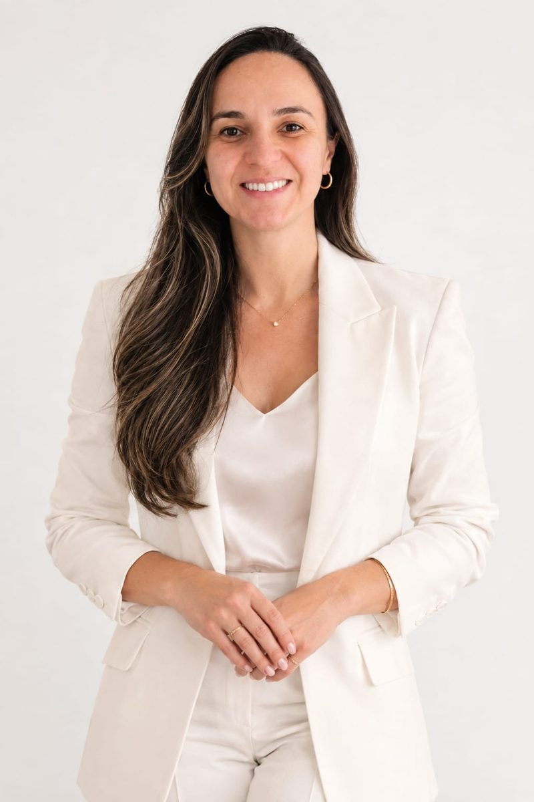

Emagrecimento
Orientação nutricional individualizada para construir hábitos possíveis e sustentáveis.
Emagrecimento, saúde hormonal e intestinal: cuide da sua alimentação com orientação nutricional que considera sua história, suas necessidades e sua rotina.

Alimentação, hábitos, rotina e necessidades individuais fazem parte da conversa. O acompanhamento é construído com você, sem fórmulas prontas.
Orientação nutricional individualizada para construir hábitos possíveis e sustentáveis.
Atenção à alimentação e à rotina em diferentes fases da vida.
Um olhar atento aos hábitos alimentares e ao bem-estar digestivo.
Estratégias alimentares consideradas dentro da sua realidade e necessidades.
Seu acompanhamento não precisa começar com uma dieta. Pode começar com uma conversa.
Conte pelo WhatsApp o que você procura e tire suas primeiras dúvidas.
Vamos conversar sobre modalidade, disponibilidade e formato do atendimento.
Com o agendamento, começa uma avaliação individualizada e adequada aos seus objetivos.
Acredito que cada pessoa tem uma história, uma rotina e necessidades próprias. Por isso, o atendimento começa com uma boa conversa e considera o que faz sentido para a sua vida.
Meu objetivo é orientar escolhas alimentares com responsabilidade, acolhimento e atenção à sua individualidade.
Conheça meu InstagramEscolha a modalidade mais adequada para você e consulte a disponibilidade pelo WhatsApp.
Rua Padre Antônio Tomaz, 91
Maurício de Nassau — Caruaru/PE
CEP 55012-630
Atendimento remoto para pessoas de diferentes localidades, observadas as regras profissionais e exigências aplicáveis ao local de atendimento.
Consultar atendimento ↗As duas modalidades podem estar disponíveis. Entre em contato para confirmar horários, formato e condições do atendimento.
Sim. Você pode chamar pelo WhatsApp, explicar brevemente o que procura e tirar suas dúvidas iniciais.
Não. A avaliação considera sua história, rotina, necessidades e objetivos. As orientações são definidas individualmente durante o atendimento.
Essas informações são fornecidas diretamente pelo WhatsApp, junto com os detalhes do atendimento.
Conte o que você busca. Vamos entender juntas qual atendimento faz sentido para você.
CONVERSAR COM A MONA PELO WHATSAPP ↗